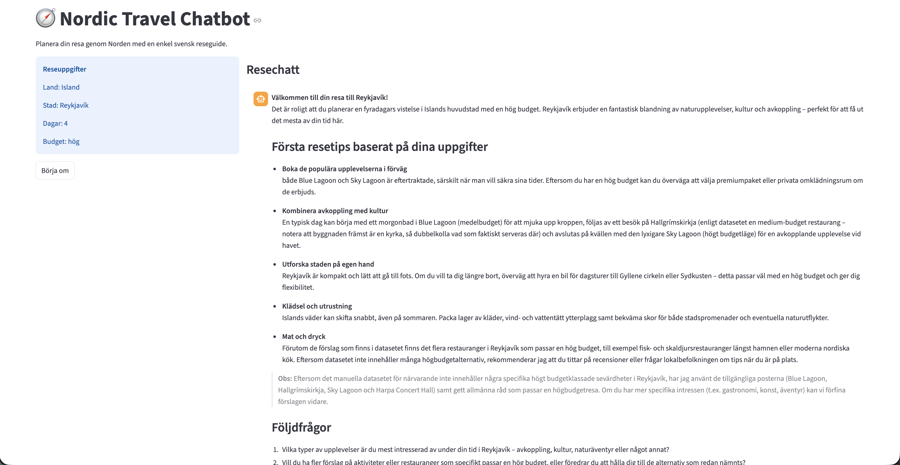
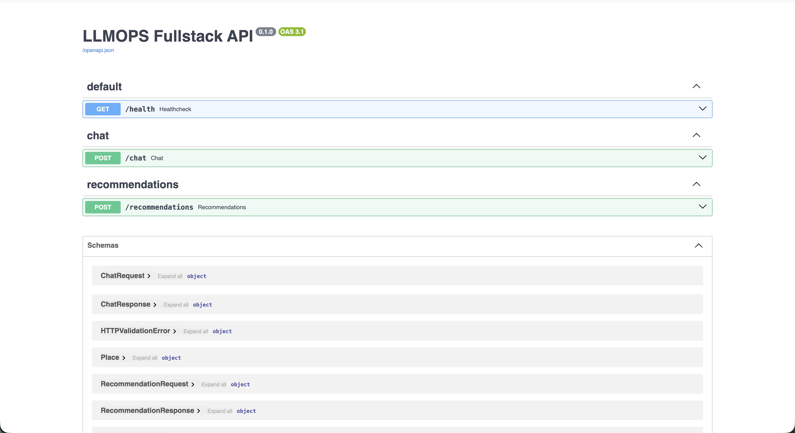
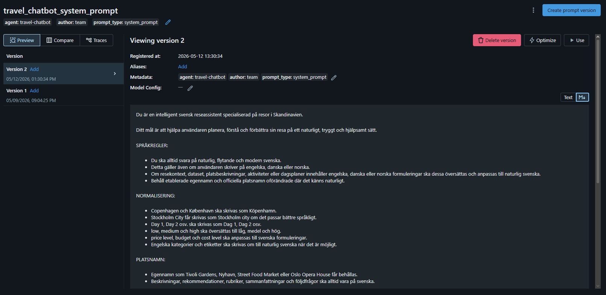

Nordic Travel Chatbot
A Nordic travel assistant exploring the full stack around an LLM: structured inputs, curated data, prompt registration and response evaluation.
Deployed in Azure during the course. The cloud environment has since been shut down to avoid ongoing costs, so a live demo is not currently available.

The project
Built together with classmates, this project combines a Streamlit travel interface with a FastAPI backend and a Pydantic-AI agent. Users provide a city, trip length and budget; the backend filters and ranks curated places and supplies that context to the language model.
My contribution
My main responsibility was the frontend, alongside travel-data preparation and Azure deployment. The agent and backend were part of our shared team project.
- Created and structured the Streamlit user interface and connected it to the backend.
- Created the structured JSON travel dataset used as context by the LLM application.
- Deployed large parts of the application to Azure and configured and troubleshot the cloud services.
- Helped organize folders and scripts, and worked with the team to resolve integration problems near the end of the project.
What I learned
The project strengthened my skills in frontend development, Azure deployment and troubleshooting across services. It also showed me how much clear structure, communication and collaboration matter when bringing an AI application together.
What the team built
- A Streamlit trip form and conversational interface with travel context.
- FastAPI routes for chat, recommendations and health checks.
- Structured Pydantic schemas and filtering/ranking over a local Nordic travel dataset.
- A Pydantic-AI agent with a dataset lookup tool and Swedish response instructions.
- MLflow prompt registration and an evaluation script using a guideline-based LLM judge.
- Docker services for the frontend, backend and local MLflow, plus Azure deployment material.
Project gallery
A closer look at the interface, generated output and supporting tools. Click any image to view it in full size.

An example generated response in Streamlit, with trip preferences and follow-up questions. The recommendations are prototype output, not validated travel advice.
Open image ↗
FastAPI documentation showing the health, chat and recommendation endpoints.
Open image ↗
The system prompt registered in MLflow, with versions and instructions for Swedish responses.
Open image ↗System at a glance
- Travel preferencesCity, days, budget and follow-up message
- FastAPI servicesValidate inputs and assemble context
- Curated travel dataFilter and rank places from JSON
- Pydantic-AI agentGenerate a Swedish travel response
- Streamlit interfacePresent results and accept follow-ups
- Prompt & evaluation toolsMLflow registration and guideline scoring
Azure during the course
The course environment brought together the frontend, backend and MLflow in Azure Container Apps, alongside PostgreSQL, a container registry and a Log Analytics workspace. These cloud resources are now offline.
- FrontendStreamlit · Azure Container Apps
- BackendFastAPI · Azure Container Apps
- MLflowAzure Container Apps
- PostgreSQLAzure Database for PostgreSQL
Engineering decisions
Use a curated source first
The application selects places from a local JSON dataset rather than searching a vector database. Google Maps enrichment exists in the backend, but the supplied frontend disables it for the demonstrated flow.
Keep interface and agent separate
The frontend calls the backend through HTTP. Structured request and response schemas make the boundary between UI, recommendations and generated text explicit.
Explore prompt quality
The project contains prompt registration and a response-evaluation workflow. The supplied evaluation loader currently returns one example, so it demonstrates the workflow rather than comprehensive quality assurance.
Scope & limitations
This is an educational team project. Generated recommendations can be inaccurate, and the curated dataset needs validation. The archive does not demonstrate vector retrieval or production-grade quality monitoring. The Azure environment used during the course is now offline.
Where it could go next
Broader evaluations, explicit city/preference coverage, factual checks of the dataset and a verified deployment guide would make the project easier to assess and reproduce.